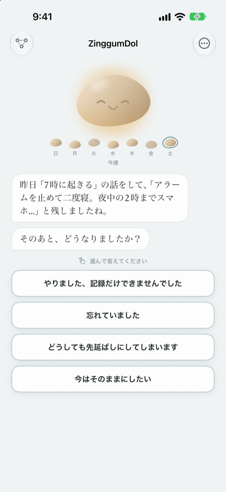
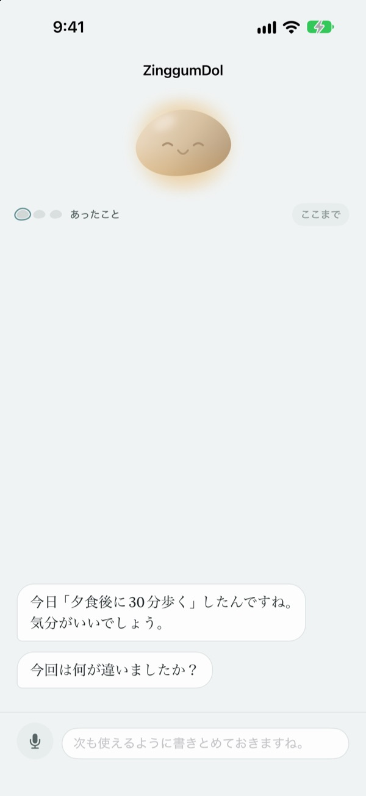
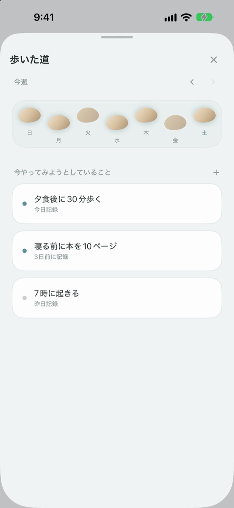
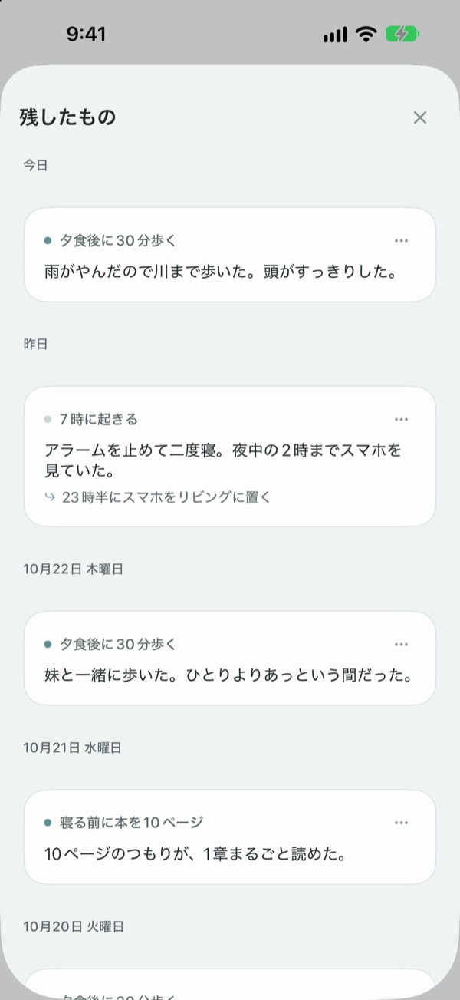

踏み外しても、
川に落ちたわけじゃない
目標を逃した日、小石のほうから話しかけてきます。何を間違えたかではなく何があったかを聞き、出来事と気持ちを分けて返してくれます。
会話・記録・歩いた道は無料。登録も広告もありません。

小石と話してみる
今日は夕方に歩くつもりだったのに、歩けなかった日です。答えを選ぶか自分で書くと、小石がアプリと同じように返事をします。
予定どおりにいかなかった日、自分を責めていませんか？
運動をサボった夜、まず浮かぶのは「なんで自分はこうなんだろう」という言葉。でもよく見ると、残業があって、雨が降って、くたくたでした。ZinggumDolはその日あったことと今の気持ちを別々に聞き、二つを並べて見せてくれます。意志が弱いからではなく事情がそうだったと気づけば、明日の小さな一歩が見えてきます。
小石のほうから話しかけてくる
目標を決めておくと、小石ができた日もつまずいた日も一緒に見守ります。逃した日には「どうしてやらなかったの？」ではなく「何があったの？」と聞き、前回話したことを覚えていて、その後どうなったかを尋ねます。
書くのがしんどい日は、声に出して話しても大丈夫。音声はデバイス内で認識され、録音は保存されません。

歩いた道が飛び石になって並ぶ
1週間が飛び石の一列になって広がります。踏めなかった日の石も消さずにそのまま残します。
抜けた日があっても、道がちゃんと続いていることが一目で分かります。

残した話をもう一度読み返す
あったこと、そのときの気持ち、次に試すことが日付順に積み重なります。同じようにつまずいた日を読み返せば、何が効いたかが見えてきます。
ホーム画面のウィジェットで小石のひと言を見たり、決めた時間に今日をふりかえる通知を受け取ったりもできます。

始め方は3ステップ
- 1
目標をひとつ書く
「夕食後に30分歩く」のように、やってみたいことを書きます。
- 2
一日の終わりにアプリを開く
小石が今日はどうだったか聞いてきます。通知を設定しておけば忘れません。
- 3
選ぶか書いて答える
いつでも
今はそのままにしたいで終われます。
会話はこんなふうに進みます
- あったこと
- 何があったか、事実だけを聞きます
- 気持ち
- 今の気持ちを5段階から選びます
- ふりかえり
- あったことと今の気持ちを分けて返してくれます
- 次の一歩
- 5分でできる小さなことを自分で決めます
- まとめ
- 気持ちがひどく沈んでいる日は、それ以上聞かずに休もうと言います
どの段階でもやめられて、それまでに話したことは残ります。
会話と記録は無料。もっと使いたくなったらPro
無料
- 小石との会話すべて
- 目標3つまで
- 声で残す
- 歩いた道と残した話
- ホーム画面ウィジェットと毎日の通知
- パスコードでロック
ZinggumDol Pro
- 目標を数の制限なく
- 小石の質感を6種類から選べる
- 記録をテキストファイルで書き出し
一度買えばずっと使えます。サブスクリプションではありません。
会話の途中で購入画面が割り込むことはありません。別のデバイスで使うときや再インストールしたときは、設定の「購入の復元」をタップしてください。
よくある質問
逃した日は必ず理由を書かないといけませんか？
いいえ。どの段階でも 今はそのままにしたい をタップすればすぐに終わります。それまでに話したことは残るので、次に続きを話せます。
実はやったのに、アプリにやっていないと言われます。
やったけど記録できなかった をタップすると、小石は素直に受け止めて、何が助けになったかを聞いてきます。うまくいったことは記録され、次につまずいたときに思い出させてくれます。
声で話した内容はどこへ行きますか？
声はデバイス内で文字になり、録音は保存しません。対応デバイスでは読みやすく文を整えてくれますが、これもデバイス内で行われます。
目標はいくつまで持てますか？
無料で3つまでです。終わった目標は歩いた道で 手放す を使えば空きができます。それ以上持つにはZinggumDol Proが必要です。
ZinggumDol Proはサブスクリプションですか？
いいえ。一度買えばずっと使えます。別のデバイスで使うときや再インストールしたときは、設定の 購入の復元 をタップしてください。
ほかの人に記録を見られませんか？
登録はなく、記録はあなたのデバイスとあなたのiCloudにだけあります。設定でパスコードをかけてアプリをロックできます。書いた内容は開発者に送られません。アプリを開いた日などの匿名の利用統計も設定でオフにできます。
通知の時間を変えたいです。
設定の 毎日の通知 でオン・オフと時間を決められます。
小石はうまくいったことも思い出させてくれますか？
はい。効いたことを覚えていて、つらい日には最近うまくいったことを思い出させてくれます。
記録をすべて消すには？
設定の すべての記録を削除 をタップすると、目標と記録がすべて消え、元に戻せません。iCloudでつながったほかのデバイスからも消えます。設定と購入はそのまま残ります。Proなら、消す前に 記録を書き出す で保存しておけます。
問い合わせはどこにすればいいですか？
アプリの設定の「フィードバックを送信」か、下のメールアドレスまでお送りください。
ご質問やご意見は leeo@kakao.com までお送りください。